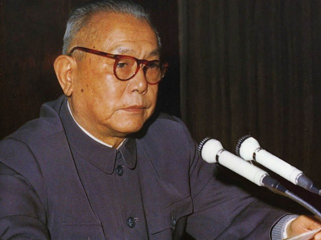

李先念
李先念（1909—1992），云南省昆明人，中国共产党卓越领导人和国家领导人之一，长期从事革命和国家建设工作，为新中国发展作出了重要贡献。
李先念以严谨、务实、奉献精神著称，领导财政、经济和国家管理工作，推动国家现代化建设。他注重实事求是和科学决策，为国家发展提供了坚实保障。
在家庭生活中，李先念强调勤俭、诚实、责任感和教育子女。他以身作则，培养后代忠于国家、勤奋工作、服务社会，将个人修养与国家使命紧密结合。
李先念的家风和革命精神，为云南及全国红色教育提供了宝贵范例。他的事迹激励了无数青年投身国家建设和民族复兴。
← 返回中国地图